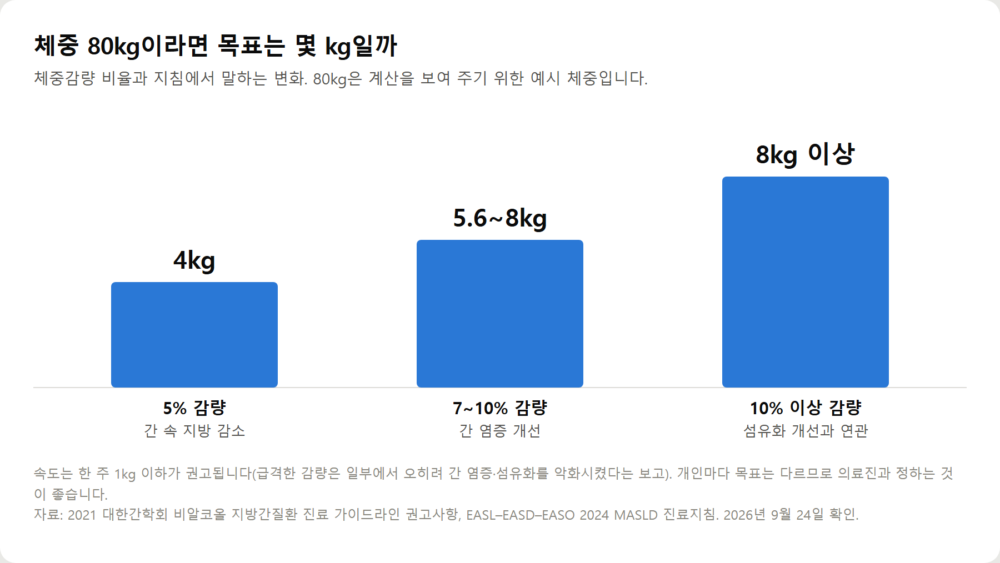

<meta charset="utf-8">
<title>지방간 생활습관 관리 요약 — 체중·운동·음주 기준 숫자 — 나의 투자 그리고 행복한 여행</title>
<meta name="description" content="지방간에 좋은 생활습관을 대한간학회 진료 가이드라인 기준으로 정리했습니다. 체중 5% 감량, 주 3회 이상 운동, 단 음료·술 줄이기, 지방간에 좋은 음식과 피해야 할 음식, 커피, 정기 검사까지 담았습니다.">
<meta name="viewport" content="width=device-width, initial-scale=1">
<link rel="canonical" href="https://worldtraveler1.tistory.com/114">
<link rel="preconnect" href="https://fonts.googleapis.com">
<link rel="preconnect" href="https://fonts.gstatic.com" crossorigin>
<link rel="stylesheet" href="https://fonts.googleapis.com/css2?family=Hahmlet:wght@400;600;800&family=IBM+Plex+Mono:wght@400;500&family=IBM+Plex+Sans+KR:wght@300;400;500;600&display=swap">

<style>
  :root{
    --paper:#F2EEE6;--surface:#FAF8F3;--surface-2:#E7E1D5;
    --ink:#191510;--ink-2:#4A4235;--ink-3:#7D7364;
    --line:#D6CEBF;--line-soft:#E4DDD0;--accent:#B06A15;--accent-bright:#C2761A;
    --up:#E5484D;--down:#3B82F6;
    --f-display:"Hahmlet",'Nanum Myeongjo',"Apple SD Gothic Neo",serif;
    --f-body:"IBM Plex Sans KR","Apple SD Gothic Neo","Malgun Gothic",sans-serif;
    --f-mono:"IBM Plex Mono","SFMono-Regular",Consolas,monospace;
    --pad:clamp(20px,5vw,64px);
  }
  @media (prefers-color-scheme:dark){
    :root:not([data-theme="light"]){
      --paper:#0B1120;--surface:#121A2C;--surface-2:#1A2439;
      --ink:#E9EEF7;--ink-2:#A9B5C9;--ink-3:#72809A;
      --line:#26314A;--line-soft:#1D2739;--accent:#E8A33D;--accent-bright:#F0B45C;
    }
  }
  *{box-sizing:border-box;}
  body{margin:0;background:var(--paper);color:var(--ink);font-family:var(--f-body);
    font-weight:300;font-size:1rem;line-height:1.75;-webkit-font-smoothing:antialiased;}
  a{color:inherit;}
  img{max-width:100%;height:auto;}
  .wrap{max-width:760px;margin:0 auto;padding-inline:var(--pad);}
  .nav{position:sticky;top:0;z-index:20;background:color-mix(in srgb,var(--paper) 88%,transparent);
    backdrop-filter:saturate(180%) blur(12px);border-bottom:1px solid var(--line);}
  .nav-in{display:flex;align-items:center;justify-content:space-between;height:58px;}
  .brand{font-family:var(--f-display);font-weight:600;font-size:1rem;letter-spacing:-.02em;text-decoration:none;}
  .back{font-family:var(--f-mono);font-size:.72rem;color:var(--ink-3);text-decoration:none;}
  .article{padding-block:clamp(40px,7vw,72px) clamp(56px,9vw,96px);}
  .eyebrow{font-family:var(--f-mono);font-size:.68rem;letter-spacing:.16em;text-transform:uppercase;
    color:var(--accent);margin:0 0 14px;}
  h1{font-family:var(--f-display);font-weight:800;font-size:clamp(1.6rem,4.4vw,2.3rem);
    line-height:1.3;letter-spacing:-.03em;margin:0 0 16px;}
  .byline{font-family:var(--f-mono);font-size:.72rem;color:var(--ink-3);
    padding-bottom:24px;border-bottom:1px solid var(--line);margin-bottom:32px;}
  h2{font-family:var(--f-display);font-weight:600;font-size:1.25rem;letter-spacing:-.02em;margin:42px 0 14px;}
  h3{font-family:var(--f-display);font-weight:600;font-size:1.05rem;letter-spacing:-.02em;
    margin:30px 0 10px;padding-top:14px;border-top:1px solid var(--line-soft);}
  h3 .code{font-family:var(--f-mono);font-size:.7rem;font-weight:400;color:var(--ink-3);margin-left:6px;}
  p{margin:0 0 18px;color:var(--ink-2);}
  ul.checks{margin:0 0 18px;padding-left:20px;color:var(--ink-2);}
  ul.checks li{margin-bottom:8px;font-size:.94rem;}
  table{width:100%;border-collapse:collapse;font-size:.88rem;margin-bottom:8px;}
  th{font-family:var(--f-mono);font-size:.66rem;letter-spacing:.06em;text-transform:uppercase;
    color:var(--ink-3);text-align:right;padding:8px 6px;border-bottom:1px solid var(--line);}
  th:first-child{text-align:left;}
  td{padding:10px 6px;border-bottom:1px solid var(--line-soft);color:var(--ink-2);}
  td.num{font-family:var(--f-mono);text-align:right;font-variant-numeric:tabular-nums;}
  td.up{color:var(--up);} td.down{color:var(--down);}
  .scroll{overflow-x:auto;}
  figure{margin:22px 0;}
  figure img{display:block;border-radius:3px;background:var(--surface-2);}
  figcaption{margin-top:8px;font-family:var(--f-mono);font-size:.68rem;color:var(--ink-3);text-align:center;}
  .note{margin-top:34px;padding:16px 18px;border-left:3px solid var(--accent);
    background:var(--surface);border-radius:0 3px 3px 0;}
  .note p{margin:0;font-size:.85rem;color:var(--ink-3);}
  .foot{border-top:1px solid var(--line);background:var(--surface);padding-block:30px 38px;}
  .foot p{margin:0;font-size:.8rem;color:var(--ink-3);}
</style>

<nav class="nav">
  <div class="wrap nav-in">
    <a class="brand" href="../index.html">나의 투자 그리고 행복한 여행</a>
    <a class="back" href="../index.html#stocks">← 시황으로</a>
  </div>
</nav>

<main class="wrap article">
  <p class="eyebrow">Market</p>
  <h1>지방간 생활습관 관리 요약 — 체중·운동·음주 기준 숫자</h1>
  <p class="byline">건강 · 2026-09-24 기준</p>

  <p>한 줄 요약: 지방간 관리의 첫 목표는 체중 5% 감량이고, 속도는 주 1kg 이하, 운동은 주 3회·30분 이상에서 시작합니다.</p>
  <p>2026년 9월 24일 대한간학회 2021·2025 진료 가이드라인과 EASL–EASD–EASO 2024 지침, WHO 자료로 정리한 기록입니다.</p>
  <h2>지방간 생활습관 기준 요약</h2>
  <ul class="checks">
    <li>명칭: 비알코올 지방간질환 → 대사이상지방간질환(MASLD), 대한간학회 2025</li>
    <li>국내 유병률 약 30%, 발생률 1,000명당 연간 약 45명 (대한간학회 2021)</li>
    <li>체중: 5% 이상 감량 → 간 내 지방 감소 / 7~10% 이상 → 염증·섬유화 개선</li>
    <li>감량 속도: 주 1kg 이하</li>
    <li>식사: 하루 500kcal 이상 줄이기, 지중해식 식사</li>
    <li>운동: 주 3회 이상·30분 이상 중간 강도 (대한간학회) / 주 150분 초과 (EASL 2024)</li>
    <li>당류: 유리당 하루 열량의 10% 미만, 가능하면 5% 미만 (WHO)</li>
    <li>술: 중등도 이하 음주도 주의, 진행성 섬유화·간경변증이면 금주</li>
    <li>커피: 관찰연구에서 간 건강 지표와 긍정적 연관 (치료 효과 아님)</li>
    <li>건강기능식품: 근거 부족으로 권고하지 않음 (EASL 2024)</li>
    <li>검사: 간수치(AST·ALT·감마지티피), 복부초음파, 필요 시 섬유화 평가</li>
  </ul>
  <figure><figcaption>체중감량 비율별로 지침에서 제시하는 변화 — 80kg 예시 계산</figcaption></figure>
  <h2>전체 내용은 원문에서</h2>
  <p>7가지 생활습관 각각의 실천법과 흔한 실수, 지방간에 좋은 음식과 줄일 음식 표, 커피 이야기, 1주일 식단·운동 예시, 진료가 필요한 경우, 자주 묻는 질문 8개는 원문에 정리해 두었습니다.</p>
  <div style="text-align:center;margin:30px 0"><a href="https://worldtraveler1.tistory.com/114" target="_blank" rel="nofollow sponsored noopener" style="display:inline-block;padding:15px 28px;background:#E34948;color:#fff;font-weight:700;font-size:18px;text-decoration:none;border-radius:8px"><b>▶ 원문에서 전체 내용 보기 — 지방간에 좋은 생활습관 7가지</b></a></div>
  <h2>참고자료</h2>
  <ul class="checks">
    <li>대한간학회, 2025 대사이상지방간질환 진료 가이드라인 — https://www.kasl.org/bbs/?number=6193&amp;mode=view&amp;code=guide</li>
    <li>대한간학회, 2021 비알코올 지방간질환 진료 가이드라인 — https://kasl.org/bbs/?code=guide&amp;mode=view&amp;number=4630</li>
    <li>대한간학회, 비알코올 지방간질환 진료 가이드라인 개정 보도자료(2021) — https://kasl.org/bbs/?code=general_notice&amp;mode=view&amp;number=5562</li>
    <li>EASL–EASD–EASO, MASLD 진료지침(2024) — https://pubmed.ncbi.nlm.nih.gov/38851997/</li>
    <li>WHO, 성인·어린이 당류 섭취 지침(2015) — https://www.who.int/news/item/04-03-2015-who-calls-on-countries-to-reduce-sugars-intake-among-adults-and-children</li>
    <li>WHO, 신체활동 팩트시트 — https://www.who.int/news-room/fact-sheets/detail/physical-activity</li>
    <li>질병관리청 국가건강정보포털, 비알코올 지방간 — https://health.kdca.go.kr/healthinfo/biz/health/gnrlzHealthInfo/gnrlzHealthInfo/gnrlzHealthInfoView.do?cntnts_sn=5247</li>
    <li>국민건강보험공단, 국가건강검진 안내 — https://www.nhis.or.kr</li>
  </ul>
  <div class="note"><p>이 글은 공개된 진료 가이드라인과 공공기관 자료를 바탕으로 정리한 일반적인 건강정보이며, 개인의 진단이나 치료를 대신하지 않습니다. 간수치나 검사 결과에 대한 판단, 음주·체중 목표는 진료한 의료진과 상의하시기 바랍니다. 2026년 9월 24일 확인 기준입니다.</p></div>
</main>

<footer class="foot">
  <div class="wrap"><p>나의 투자 그리고 행복한 여행 · 투자 판단의 참고 자료일 뿐, 매수·매도를 권유하지 않습니다.</p></div>
</footer>
